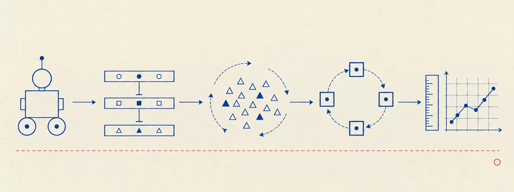

University of Bologna — Cesena · Prof. Andrea Roli · A.Y. 2025/2026
Intelligent Robotic Systems
16 chapters40 interactive widgets41 plates~11 hours of study

Plate 00 — The road of the course. Foundations (the definition of a robot, its history, adaptivity, control architectures), then behaviour-based robotics (reactive control, subsumption, fusion, behavior trees), then the three ways of obtaining adaptive behaviour (swarms, evolution, learning), and finally deliberative control and the methodology of experimental robot science.
How to study
The chapters are in dependency order: read them from the beginning. Every chapter consolidates in one place everything the lectures said about a topic.
The plates are archival technical diagrams reconstructed from the slides: read them as figures, not decoration. The widgets (simulators, steppers, explorers) are worked implementations of the mechanisms — use them actively.
Each chapter ends with “Check your understanding”: collapsible exam-style questions with answers in the exact wording of the course.
Every chapter footer lists the lecture decks it comes from; sources are the official course slides, not redistributed.